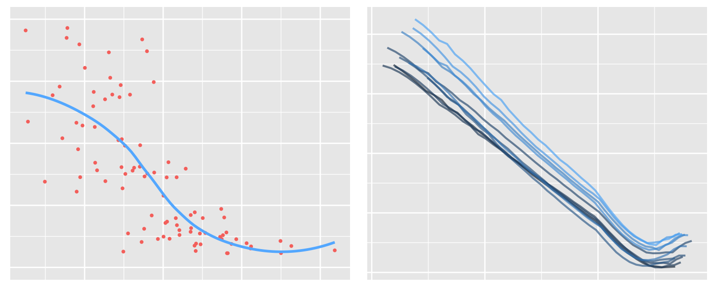

We are in the midst of a data revolution. Strong data wrangling and analysis skills are essential for analytical professionals in all industries. No where is this more true than in the complex world of finance.
This innovative course series has been designed from the ground up specifically for finance professionals. The primary goal is to have you doing professional financial analysis as quickly as possible using R and the tidyverse.
Basic Wrangling (6 hrs) - get up and running with R and then master the core tidyverse data analysis functions such as filter, mutate, and group_by.
Advanced Wrangling (3 hrs) - continue to grow your tidyverse tool box with knowledge of tidy/relational data, writing functions, and advanced iteration techniques using the purrr package.
Data Visualization (3 hrs) - learn to use the ggplot2 package to build visualizations that are ubiquitous in finance, such as line graphs, bar charts, and scatter plots.
Options Data Analysis (6 hrs) - a course designed for options professionals wanting to integrate R into their analysis stack. We cover the packages, patterns, and techniques used in options analysis. This course features equity options data from our data partners at Delta Neutral.
